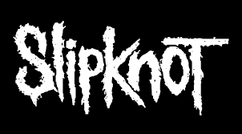
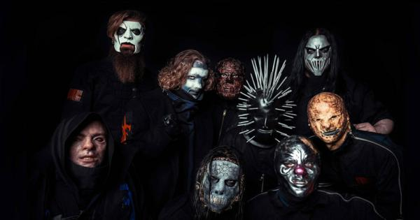

|

|
Nome: Slipknot Data de Criação: SETEMBRO DE 1995 Estilo Musical: Heavy Metal Origem: Des Moines, Iowa, Estados Unidos Integrantes: Corey Taylor, Mick Thomson, Shawn Crahan, Craig Jones, Sid Wilson, James Root, Jay Weinberg e Alessandro Venturella. Prêmios: Grammy Awards
Das oito nomeações para o Grammy Awards o Slipknot ganhou apenas uma.
Before I Forget - Best Metal Performance, 2006 (vencedores) |
|
|
Slipknot é uma banda americana de metal formada em Des Moines, Iowa, em 1995. Advinda do seu estilo musical, nu metal, que explodiu no fim dos anos 1990 nos Estados Unidos, a banda é conhecida por seu grande número de integrantes, pelas máscaras usadas por cada um, e pelos shows enérgicos, o que garantiu um número grande de fãs jovens até os dias atuais. Entre 1998 e 2010, a banda foi constituída por Sid Wilson, Chris Fehn, James Root, Craig Jones, Shawn Crahan, Mick Thomson, Corey Taylor, Paul Gray e Joey Jordison, responsáveis pela gravação de quatro álbuns de estúdio nesse período. Após a morte do baixista Paul Gray em 2010 e a saída do baterista Joey Jordison em 2013, Alessandro Venturella (baixo) e Jay Weinberg (bateria) foram escolhidos como substitutos. Em 2019, após um processo de Chris Fehn contra a banda, o percussionista a deixou, sendo substituído por Michael Pfaff .
A banda lançou seu primeiro disco demo, Mate. Feed. Kill. Repeat., em 1996. O seu álbum homônimo de estreia foi lançado em 1999, tendo sido sucedido por Iowa em 2001 e Vol. 3: (The Subliminal Verses) em 2004. Os discos seguintes, All Hope Is Gone (2008), .5: The Gray Chapter (2014) e We Are Not Your Kind (2019) atingiram am o topo de várias paradas musicais pelo mundo, inclusive a norte-americana Billboard 200. A banda lançou também cinco DVDs, incluindo Disasterpieces (2002), que foi certificado com quádrupla platina nos Estados Unidos, e (sic)nesses (2010), no qual os integrantes da banda fazem uma homenagem ao falecido baixista Paul Gray.
O Slipknot permanece como um dos grupos de maior sucesso dentro do seu estilo, liderando festivais de música como Ozzfest, Download Festival, Mayhem Festival, Rock am Ring, Hellfest e Graspop Metal Meeting. Até 2015, já haviam vendido cerca de 30 milhões de álbuns mundialmente. Em 2006, ganharam um Grammy na categoria Best Metal Performance pela canção "Before I Forget".